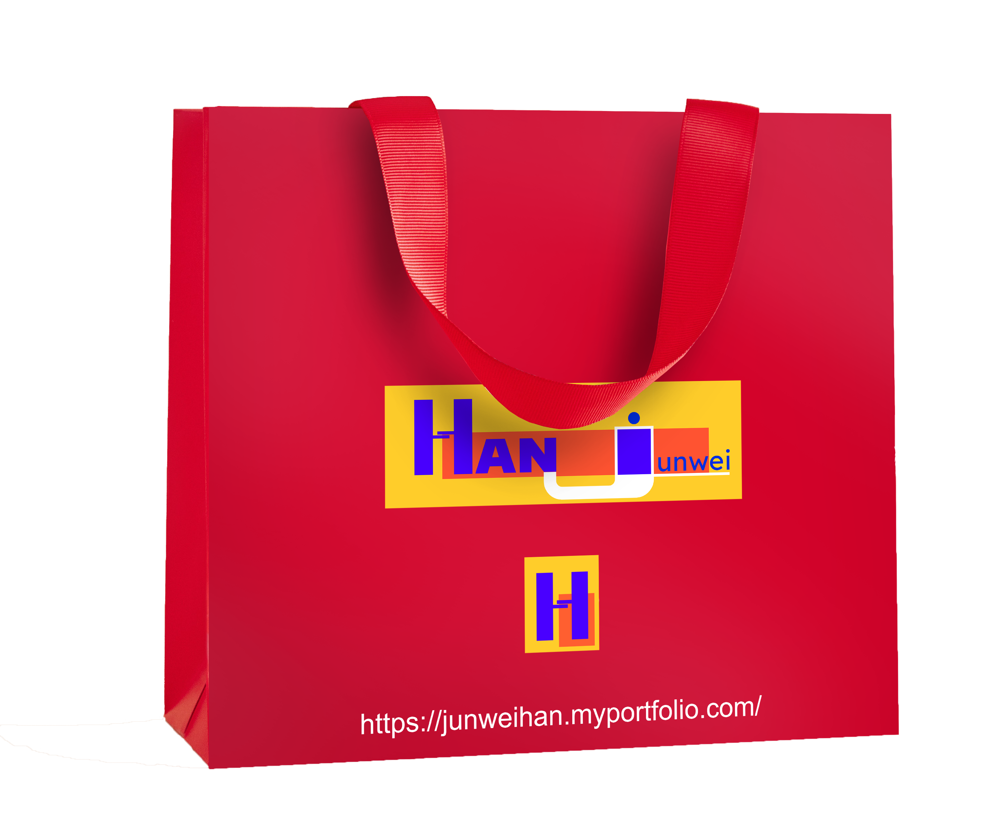
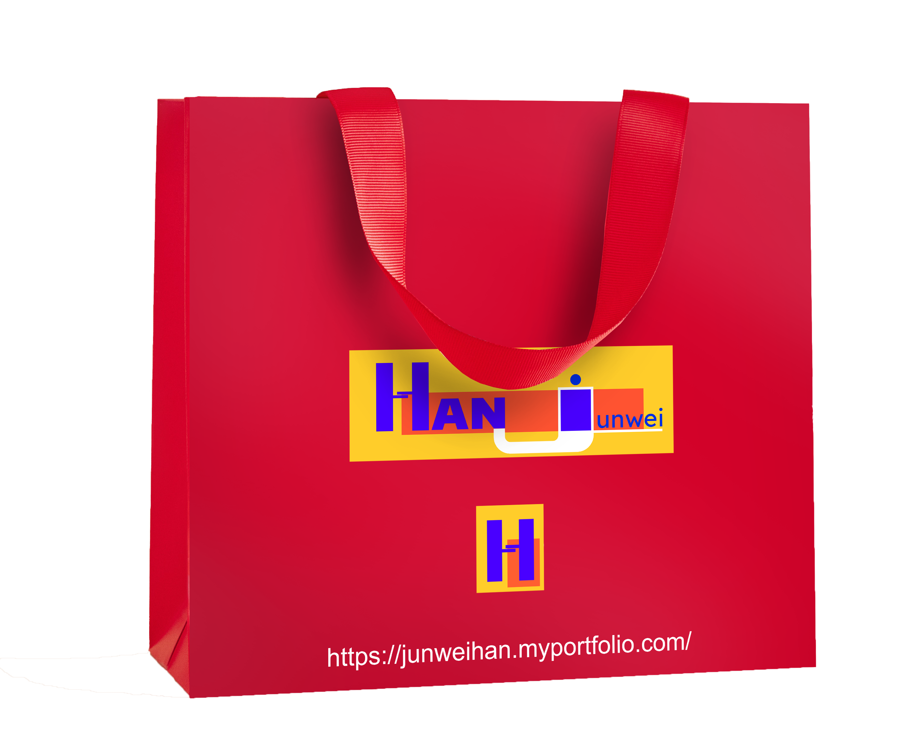

Incredible feature
Totally random websites, at the touch of your finger phone & pads.
This is a personal e-commerce website homepage developed with a full-size responsive framework, which can perfectly match the screens of all electronic equipment, and the response is fast and reliable. The information display is complete.
Click to view on Desktop

 
